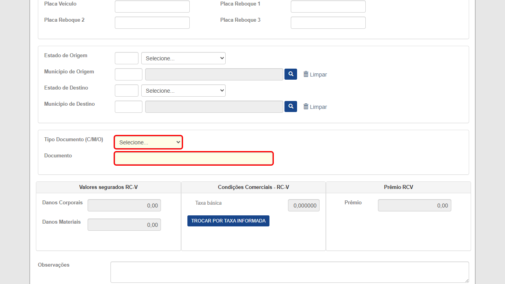
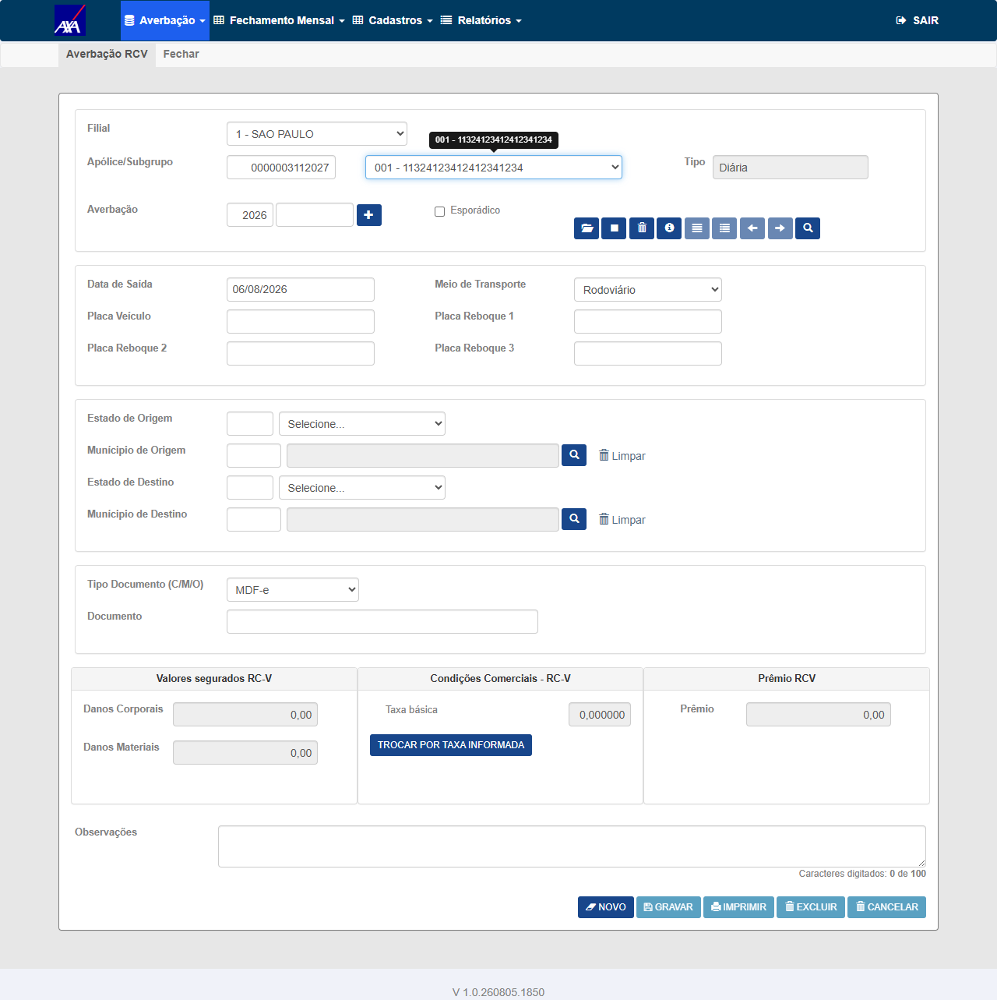
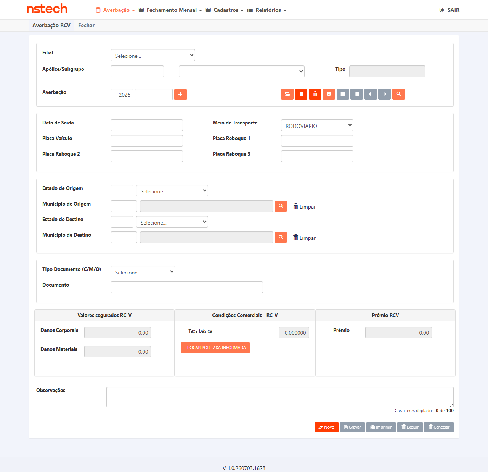
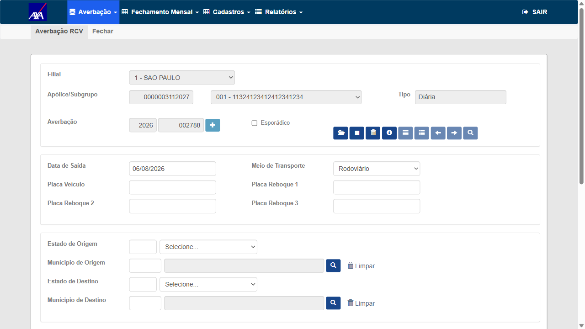
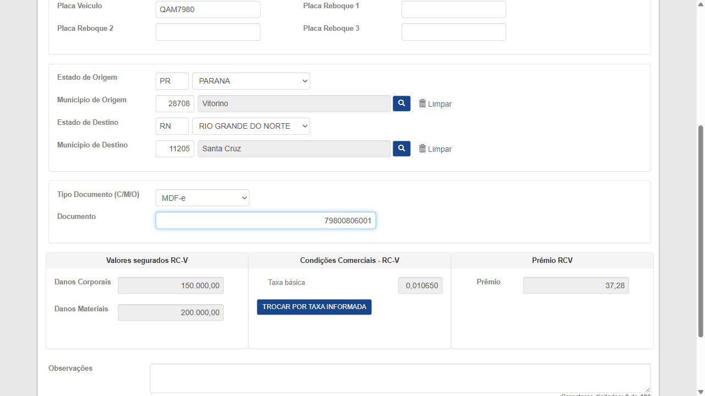
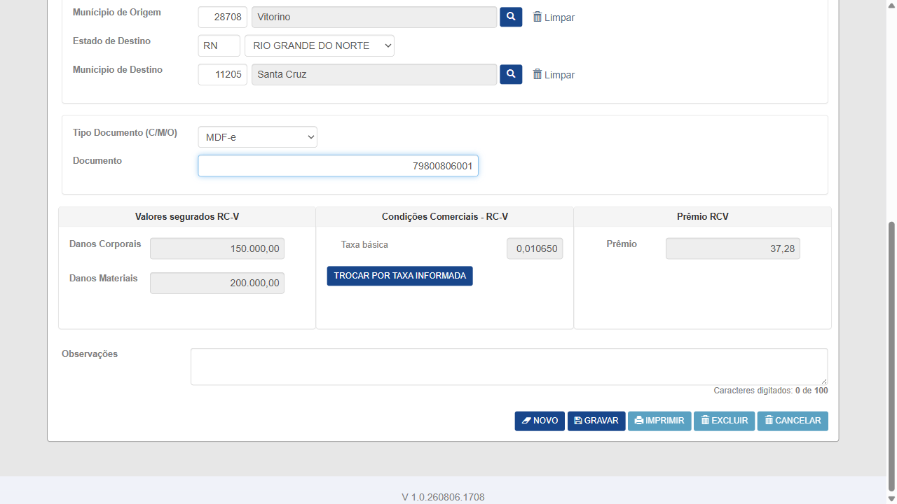
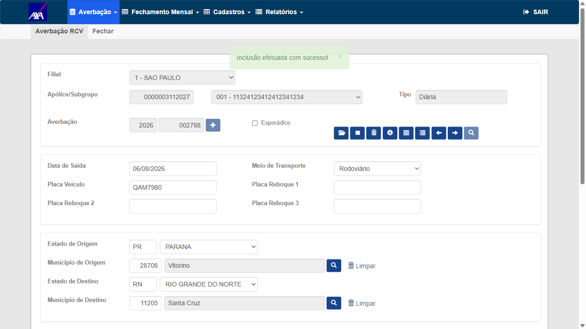
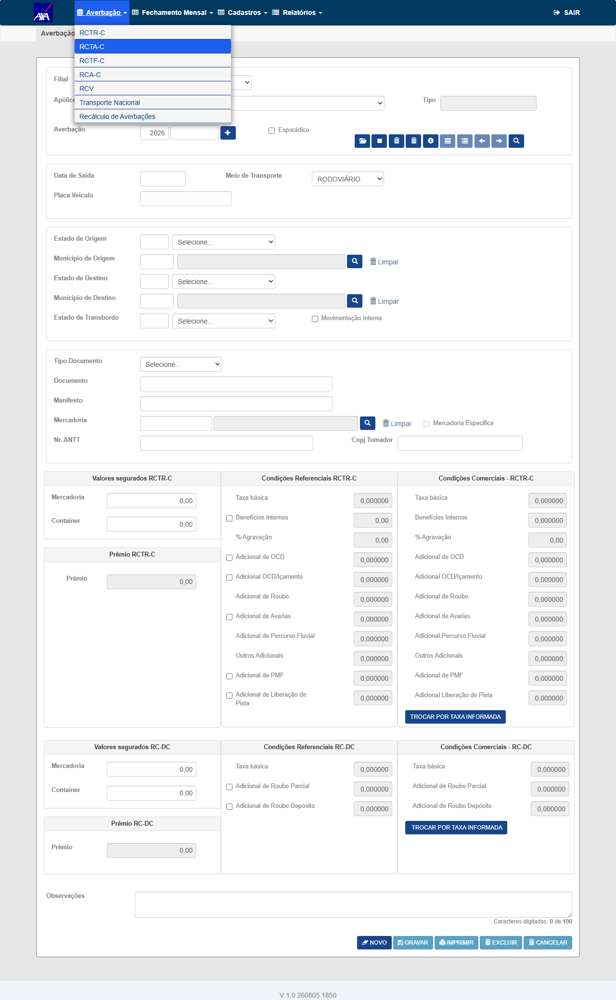
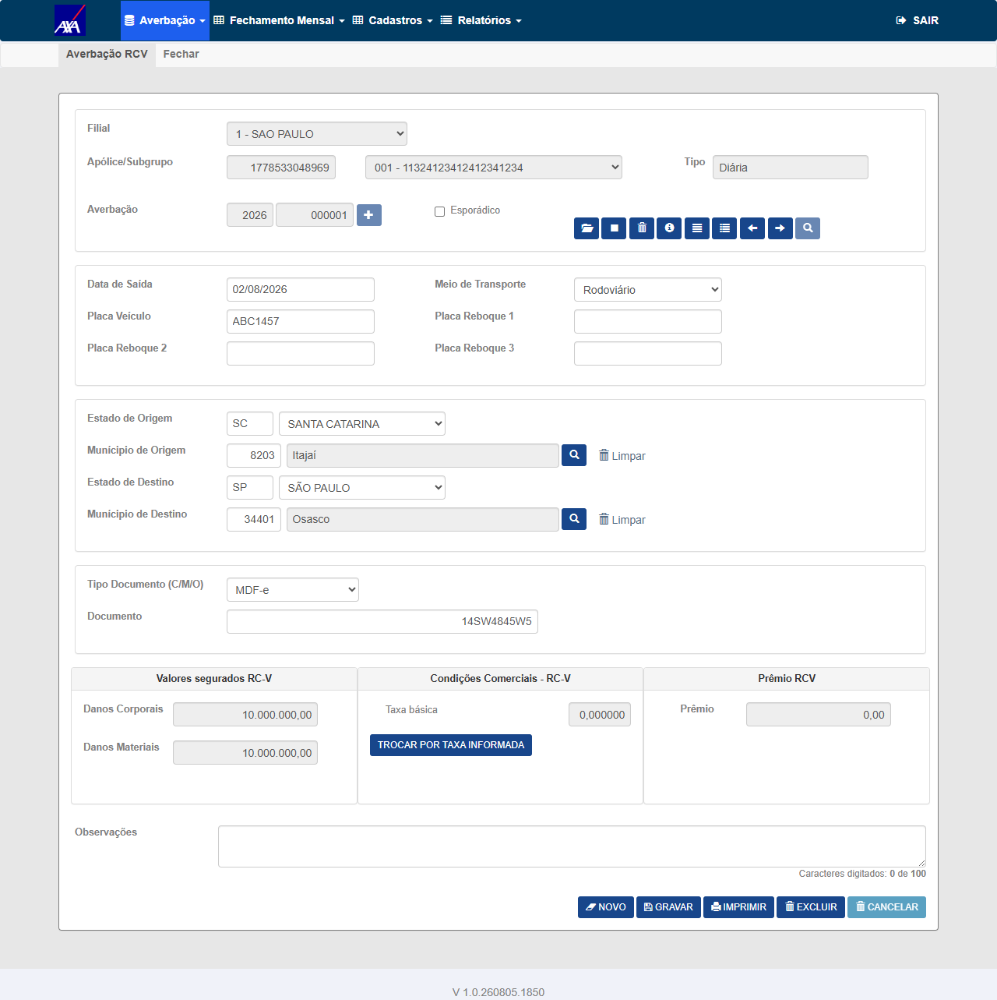

Hoje o embarque amparado por MDF-e precisa ser registrado como "Outros", misturando-o com embarques que de fato não têm documento fiscal identificável. Este card acrescenta a opção MDF-e.
Estado atual medido in loco (AXA HML, build 1.0.260804.2006, 05/08/2026 — navegação
por clique: login → Nacional → Averbação → RCV):
label na tela : "Tipo Documento (C/M/O)" ← já promete M
select : id=e_doc_ebq (4 opções, nenhuma é M)
X = "Selecione..."
C = "CTE"
N = "Nota Fiscal Eletrônica"
O = "Outros (NS, ETC)"
campo do doc. : id=c_id_vgm maxlength=44 (sem validação client-side)Dois detalhes que o card não registra e que mudam a asserção do CT: o rótulo do campo já diz "(C/M/O)" — a tela promete o M que o combo não entrega —, e o texto real da opção é "Outros (NS, ETC)", não "Outros". O CT compara strings exatas; escrever "Outros" reprovaria uma implementação correta.
Este é o único ponto que trava a escrita definitiva dos CTs, e ele não é inferível: as duas leituras produzem resultados esperados opostos para o mesmo passo.
| Onde | O que diz | CT que isso gera |
|---|---|---|
| Descrição do card | "Nesse primeiro momento não terá validação do número do MDF-e, segue conforme tipo de documento Outros." | Documento curto/alfanumérico é aceito sem aviso |
| Critério de aceite "Validação do documento" | "Ao informar um número de documento MDF-e fora do padrão esperado, o sistema deve avisar o usuário, da mesma forma que já faz hoje para CTE e Nota Fiscal Eletrônica." | Documento fora de 44 dígitos é bloqueado |
Fui medir em vez de opinar — e o dado real aponta para a descrição. Consultei as averbações MDF-e que já existem em HML e nenhuma tem chave de 44 dígitos:
| Tenant | Averbação | Conteúdo de c_id_vgm | Tamanho | Inserido por |
|---|---|---|---|---|
| AXA | apólice 1778533048969 · sgp 1 · avb 2026000001 |
14SW4845W5 | 10 · alfanumérico | FRED |
| TOKIO | apólice 52831830001 · sgp 1 · avb 202600000797 |
6C91D51395F3E5365993B727 | 24 · alfanumérico | BATCH_JS |
| KOVR | apólice 90759 · sgp 1 · avb 202600000001 |
6AFC14F2264DCB0AF9029C6F | 24 · alfanumérico | BATCH_JS |
Consequência objetiva: se o desenvolvimento validar o MDF-e como valida CTE/NF-e (44 dígitos numéricos), as 4.163 averbações MDF-e hoje em HML passam a ser inválidas — 100% delas. A leitura da descrição ("sem validação, igual a Outros") é a única compatível com o dado que existe.
Fica registrada uma pergunta separada, que é de Produtos e não do QA: o valor gravado em
c_id_vgm pelas integrações tem 24 caracteres hexadecimais, o que não se parece com uma chave de
MDF-e (44 dígitos numéricos). Ou a integração não está gravando a chave real, ou o campo tem outro significado para
MDF-e. Isso não bloqueia este card, mas decide o que "padrão esperado" significa amanhã.
Enquanto não houver decisão, os CTs de validação ficam em dois grupos mutuamente exclusivos (Grupo 3A e 3B abaixo) — executa-se um ou o outro, nunca os dois. O restante do plano não depende dessa decisão e pode ser executado assim que o desenvolvimento entregar.
Este plano foi publicado antes do desenvolvimento, justamente para que os achados chegassem a
tempo. Chegaram: o commit 46bfb67f6 (branch fix/7980-incluir-mdfe-tipo-documento-rcv)
responde aos três, e o card foi para Pronto para homologação.
| O que o plano levantou no Gate 1 | O que o desenvolvimento fez |
|---|---|
| Descrição × CA se contradizem sobre validar o número | Seguiu a descrição: "sem validação de chave MDF-e, alinhado à descrição e à massa HML (10–24 chars)". → Grupo 3A descartado, 3B é o que executa |
CA6 pede 3 saídas; a Impressão da Averbação estava fora (RelatorioDomain.cs não
usava o helper e ignorava 'N' e 'M') |
Corrigida nesta entrega — a Impressão passa a usar o mesmo helper. Nas palavras dele: "cobre o ponto do CT-TDR-011 que você levantou no Gate 1" |
O rótulo já dizia (C/M/O) mas o combo não oferecia M |
Combo passa a oferecer MDF-e de fato (View + MontarTipoDoc) |
Um comportamento novo que o plano não previa e agora precisa de CT: o JS
MontarTipoDoc (AverbacaoRCV.js) foi alterado para remontar a lista
C/N/M/O — porque, sem isso, a opção MDF-e sumia ao carregar a apólice. O dev cobriu isso na validação local
(cenário 04). É um caminho de falha real e específico: o combo pode estar correto ao abrir a tela e ficar errado
depois de escolher a apólice. Está incorporado ao CT-TDR-001 como passo adicional.
O que ele declarou NÃO ter validado — e que é exatamente o meu escopo:
"gravação/reabertura E2E e Excel de Prévia/Fechamento não rodaram no AXA local (sem apólice RCV válida no
tenant)". São os CT-TDR-003, 004, 012 e 013. A massa que falta a ele está mapeada na seção 3 deste plano
(AXA, apólice 3112027, vigente, com condição comercial) — então a homologação cobre o buraco da
validação local, que é o desenho certo.
Rodada na AXA HML, módulo Nacional, navegação por clique: login → Nacional → Averbação → RCV.
Massa apólice 3112027, subgrupo 1, condição comercial TPP, percurso PR→RN (o mesmo dos
6.147 movimentos da apólice, para isolar o teste ao campo Tipo Documento).
Duas rodadas no mesmo dia: a 1ª às 14:40 em V 1.0.260805.1850 fechou os CT-001,
009, 010 e 011; a 2ª às 16:33 em V 1.0.260806.1708 fechou o CT-003. O que separava as
duas não era o produto — os CT-003/004/007/008 estavam impedidos pelo guard de mutação em HML da sessão
automatizada de QA, que recusava a gravação. Removido o guard, o bloqueio real do CT-003 apareceu e era
massa/roteiro: Placa vazia (campo obrigatório ausente do CT). Corrigido, gravou de primeira.
| CT | Resultado | O que provou |
|---|---|---|
| 001 | APROVADO | As 5 opções exatas (X/C/N/M/O) com os textos esperados —
e continuam lá depois de carregar apólice+subgrupo e de o MontarTipoDoc rodar, que era
justamente o momento em que o MDF-e sumia. |
| 003 | APROVADO | A averbação 2026002788 gravou e_doc_ebq='M' e
c_id_vgm='79800806001' íntegro — conferido no banco, não na tela. A apólice tinha zero
registros 'M' antes (só 'O' e 'C'), então o valor novo não pode ser resíduo:
é a 1ª averbação MDF-e criada pela tela na base AXA. Mensagem exata:
"Inclusão efetuada com sucesso!". Este é o CT que o card existe para provar. |
| 009 | APROVADO | O combo do RCTR-C (ramo 54) segue com 4 opções, sem MDF-e, e o rótulo sem o sufixo "(C/M/O)". Nenhum vazamento entre ramos. |
| 010 | APROVADO | A averbação legada da integração (2026000001, doc 14SW4845W5)
carrega com MDF-e selecionado — antes a tela não tinha item correspondente para esses registros. |
| 011 | APROVADO | O arquivo impresso traz Tipo Documento: MDF-e e
Documento: 14SW4845W5. Evidência é o arquivo, não a tela. |
O campo tem class="mask-numerico" e maxlength=44, fixos — não mudam
conforme o Tipo Documento. Ao digitar QA7980MDFE001 a tela guardou 7980001: a máscara
descarta letras. Duas consequências:
14SW4845W5
(alfanumérico, o formato que a integração grava); pela tela isso é impossível. O CT-007 passa a comparar MDF-e
com "Outros" usando um documento numérico curto — a equivalência que ele afere continua a mesma.Vale registrar a assimetria: a integração grava documento alfanumérico em MDF-e, a tela só aceita numérico. Não trava este card, mas é pergunta legítima para Produtos.
Nenhum CT foi reprovado. Os bloqueios se dividem em três motivos, e dois deles derivam do mesmo impedimento:
2026002788 foi gerada e o prêmio 37,28 calculado, mas o
clique em Gravar foi recusado pelo guard de mutação em HML da sessão automática — nada foi
gravado e o ambiente ficou limpo. Na 2ª rodada, sem o guard, apareceu o bloqueio verdadeiro e ele era do
roteiro, não do produto: a Placa (campo obrigatório) não constava do CT, e o
Gravar respondia "Informe a Placa do Veículo.". Com a placa preenchida gravou de primeira, com
e_doc_ebq='M' confirmado no banco. Lição registrada: botão Gravar habilitado não significa
que a validação passa — a 1ª rodada concluiu que a averbação "chegou válida", e não tinha.2026002788), e os CT-007/008
precisam gravar novas averbações. Sem impedimento restante — entram na próxima rodada.0,00 — e a Prévia não emite arquivo sem valor a faturar. A massa que resolvia isso era exatamente a
do CT-003: com a averbação 2026002788 gravada em 06/08 com prêmio 37,28 e
u_fch_mes=0 (movimento aberto), agora existe valor a faturar na competência. Os dois CTs passam a ser
executáveis.V 1.0.260703.1628 (03/07), anterior à entrega. Mas o ponto maior veio da investigação no
repositório: o merge do #7980 (071de9cf4) está só na branch hml — não
está em hml_fix, main_fix, main nem stg —, e nenhuma branch
de deploy dos outros tenants no período o contém (HDI-Yelum, AIG, Tokio, Mitsui). A AXA foi o único ambiente
publicado a partir de hml depois do merge. Logo o CT está bloqueado por sequenciamento de
promoção, não por ambiente nem por acesso — e não deve segurar o Gate 3.Ou seja: 6 dos 7 bloqueios caem assim que a gravação for liberada, e o sétimo assim que houver um segundo tenant com o build novo.
| Card | PBI #7980 — [CITWEB] Incluir opção "MDF-e" no campo Tipo Documento da Averbação RCV (ramo 59) |
| Estado na escrita | Pronto para desenvolvimento · criado por Fabiola Costa em 03/08/2026 · atribuído a José Ribeiro Carvalho |
| Sprint / Área | CITWEB\Sprint_12_Citweb · área CITWEB · tags citweb; CORE; RCV |
| Módulo | CITWEB Nacional → Averbação → RCV (Nacional/Views/AverbacaoRCV/Index.cshtml) |
| Ramo | 59 (RC-V) — exclusivo; nenhum outro ramo deve mudar |
| Ambientes | HML AXA (principal) · HML NSTECH (2º tenant, CA "todas as seguradoras") · HML TOKIO/KOVR (massa MDF-e legada) |
| Autor / data | QA (Wesley Moreira) · 05/08/2026 |
In scope: o combo e_doc_ebq da tela de Averbação RCV; a gravação e a releitura do
tipo MDF-e; a validação (ou ausência dela) do número do documento; a regressão de CTE / NF-e / Outros; a não
contaminação de outros ramos; e as três saídas de relatório exigidas pelo CA — Impressão da Averbação,
Prévia e Fechamento.
Out of scope: validar o conteúdo semântico da chave do MDF-e junto à SEFAZ (o card declara
explicitamente que não haverá validação de número neste momento); a origem do dado gravado pelas integrações
(BATCH_JS), registrada acima como pergunta a Produtos; e o ramo 54 (RCTR-C), coberto aqui apenas como
regressão negativa — deve permanecer intacto.
Relação com o #7999 — importante para não duplicar nem deixar buraco: o PBI #7999 já entregou
(PR !1532, completed em hml) a tradução do código M para o rótulo
"MDF-e" na Prévia e no Fechamento, via a classe compartilhada
/Domain/TipoDocumentoEmbarqueRcvLabel.cs. Aqui esses dois viram regressão cruzada
(CT-TDR-012 e 013). O que o #7999 não tocou — e que o CA6 deste card exige — é a
Impressão da Averbação, que vive em Domain/RelatorioDomain.cs e
não usa a classe compartilhada: lá o mapeamento é if/else próprio, que hoje trata
'C' e 'O' e ignora 'N' e 'M'. É o CT-TDR-011, e é
o ponto de maior risco de o card ser dado como pronto sem estar.
| Uso | Tenant | Massa exata |
|---|---|---|
| Cadastro novo com MDF-e (núcleo) massa trocada em 05/08 19:3x | AXA | apólice 3112027 · subgrupo 1 · vigência
01/10/2025 a 01/10/2026 · 6.147 movimentos RCV ·
COM condição comercial em tb_sgp_rcv_cml_cit
⛔ Por que troquei: a apólice 4906590000016, que este plano trazia
(e que o smoke do dev usou), não tem condição comercial cadastrada — medido:
0 linhas em tb_sgp_rcv_cml_cit. A skill de execução avisa que RCV exige CC e que sem ela a
tela responde "Não existe condição comercial cadastrada". Isso não afeta o smoke
do dev, que só lê o combo; afeta o CT-TDR-003, que precisa
gravar a averbação — e teria virado um BLOQUEADO falso por massa.
Verificado antes de abrir o browser, não durante a execução. |
| 2º tenant (CA "todas as seguradoras") | NSTECH | apólice 1006 · org 1 · subgrupo 1 ·
vigência 01/10/2025 a 01/10/2026 · 12 movimentos |
| Regressão de leitura — MDF-e legado | AXA | apólice 1778533048969 · sgp 1 · averbação 2026000001 ·
saída 02/08/2026 · documento 14SW4845W5 |
| Relatórios com volume MDF-e | TOKIO | apólice 52831830001 · sgp 1 · 4.103 movimentos
e_doc_ebq='M' |
| Regressão CTE / NF-e / Outros | AXA · NSTECH | AXA: 43.941 'C' e 72.270 'O' na base ·
NSTECH: 15.664 'N' |
Distribuição de e_doc_ebq em HML (varredura das 16 bases com
movimento RCV, 05/08/2026): O 72.270 · C 43.941 · N 15.664 ·
M 4.163 (TOKIO, NSTECH, AXA, KOVR e KOVR-ALFA) · 7 registros com o código em branco,
só na TOKIO. Não existe minúsculo nem um 5º código — verificado, não presumido.
Origem do dado MDF-e: 4.141 das 4.142 linhas medidas foram inseridas por BATCH_JS
(integração/lote). A única exceção é a linha da AXA, gravada pelo usuário FRED — que é a conta
compartilhada de HML, ou seja, um registro de teste, não um usuário de negócio. Isso confirma a premissa do card:
o dado MDF-e entra hoje por integração, e a tela não sabe classificá-lo.
https://<seguradora>-hml-faturamento.nsseg.com.br —
AXA: axa-hml-faturamento, NSTECH: nstech-hml-faturamento..env
(HML_<SEGURADORA>_CITWEB_USER / _PASS) — nunca literal em script ou no plano.tb_mov_avb_rcv_cit, coluna e_doc_ebq
(tipo char) e c_id_vgm (documento). Conexão via DB_* do .env.https://axa-hml-faturamento.nsseg.com.br/Login e autenticar.MontarTipoDoc justamente porque a opção MDF-e sumia nesse momento — o combo pode estar certo ao abrir a tela e errado depois de escolher a apólice.e_doc_ebq apresenta
5 opções: X="Selecione...", C="CTE", N="Nota Fiscal
Eletrônica", M="MDF-e" e O="Outros (NS, ETC)".
Combo com 4 opções, sem MDF-e, e o rótulo já prometendo "(C/M/O)":

Combo com as 5 opções após carregar a apólice 3112027/subgrupo 1, com MDF-e selecionado.
Leitura direta do <select id="e_doc_ebq">:
X = "Selecione..." C = "CTE" N = "Nota Fiscal Eletrônica"
M = "MDF-e" O = "Outros (NS, ETC)" (5 opções, antes e depois do MontarTipoDoc)
Positivo · verificação de interface
nstech-hml-faturamento.nsseg.com.br.value
e mesmos textos. Qualquer diferença entre tenants indica configuração por seguradora onde o CA pede comportamento
único.A NSTECH roda o módulo Nacional em V 1.0.260703.1628 — build de 03/07, anterior
à entrega de 05/08. O combo lá tem 4 opções, sem MDF-e, o que é o esperado para esse build. Atribuir isso ao
código seria um falso REPROVADO.
071de9cf4, PR 1542, 05/08 16:27) está apenas na branch hml.
Medido com git merge-base --is-ancestor:
origin/hml ......... CONTÉM origin/hml_fix ..... não contém
origin/main ........ não contém origin/main_fix .... não contém
origin/stg ......... não contémpromote/feat/7762-main_fix (HDI-Yelum), feat/ADO-7906-…-hml (AIG),
fix/ADO-7880-… e fix/ADO-7881-… (Tokio). A AXA foi o único ambiente que subiu a partir
de hml após o merge (via promote/fix/7980-hml, 05/08 16:07).

Positivo · compatibilidade multi-tenant
3112027 · subgrupo 1 · vigência 01/10/2025 a 01/10/2026 (a data de saída precisa cair dentro dela) · COM condição comercial — a apólice 4906590000016 do plano original não tem CC e travaria a gravação (ver seção 3).Data de saída dentro da vigência · Tipo Documento
MDF-e · Documento 79800806001 · origem PR/Vitorino (28708) e
destino RN/Santa Cruz (11205) — o percurso dos 6.147 movimentos da apólice, que faz a condição
comercial TPP resolver (prêmio 37,28 calculado na tela).
⚠️ Corrigido em 06/08: o documento era
QA7980MDFE001, mas o campo tem class="mask-numerico" e descarta letras — digitar aquilo
guardava 7980001. Os Danos Materiais/Corporais saíram dos dados de entrada: são
read-only, herdados da apólice (200.000,00 / 150.000,00), não digitáveis como
o plano supunha.
⚠️ Corrigido em 06/08 (2ª correção) — campo obrigatório que
faltava no CT: a Placa (#t_vei_tpr, 7 posições, uppercase) é
obrigatória e não constava nem dos dados de entrada nem dos passos. Sem ela o Gravar responde
com o modal ATENÇÃO! e não grava — foi o que aconteceu nas rodadas de 16:24 e 16:25, e é
também a razão pela qual a tentativa das 14:40 não teria gravado mesmo sem o bloqueio de mutação do harness
("Gravar habilitado" não é o mesmo que "validação passa"). Fonte:
features/averbacao/rcv-citnet.md passo 10 e a lista de obrigatórios da linha 101, ambos validados
in loco em 27/07/2026. Placa usada: QAM7980.
Ids reais da tela, medidos em 06/08: Documento = #c_id_vgm
(maxlength=44, mask-numerico) · Prêmio = #v_cml_pmo · DC/DM =
#v_dc/#v_dm · Placa = #t_vei_tpr. Os ids
#u_doc_ini/#u_cnh_elt da suíte compartilhada não existem nesta tela.
GerarProximaAverbacao → CarregarAverbacao);
o botão Novo apenas limpa o formulário e deixa o Gravar desabilitado.SELECT e_doc_ebq, c_id_vgm FROM tb_mov_avb_rcv_cit
WHERE u_apo_pnc = 3112027 AND u_avb = <averbação gerada>
-- esperado: e_doc_ebq = 'M' c_id_vgm = '79800806001''O' com o combo mostrando MDF-e é REPROVADO — é justamente o defeito que o
card existe para eliminar.e_doc_ebq='M' ·
AXA HML · build V 1.0.260806.1708 · 06/08/2026 16:33
Mensagem exata na tela (#divAlert em alert alert-success):
"Inclusão efetuada com sucesso!"
Oráculo em banco smt-hom-citweb-axa — o número da averbação não foi suposto, saiu do próprio
formulário (#u_avb) e foi reconferido no banco:
SELECT u_avb, e_doc_ebq, c_id_vgm, d_sda_vgm, u_sgp
FROM tb_mov_avb_rcv_cit WHERE u_apo_pnc = 3112027 ORDER BY u_avb DESC
u_avb=2026002788 e_doc_ebq='M' c_id_vgm='79800806001' d_sda_vgm=2026-08-06 u_sgp=1 <-- gravada agora
u_avb=2026002787 e_doc_ebq='O' c_id_vgm='1691'
u_avb=2026002786 e_doc_ebq='O' c_id_vgm='1690'
contagem da apólice: 6.147 -> 6.148 (delta +1) max u_avb: 2026002787 -> 2026002788
distribuição na apólice: 'O'=5.624 'C'=523 'M'=1
'M' na base AXA inteira: 1 -> 2O contraste é o que torna o CT conclusivo: a apólice tinha zero registros
'M' antes (só 'O' e 'C'), e a linha nova gravou 'M' — não
'O'. Esta é a primeira averbação MDF-e criada pela tela na base AXA; a única
outra 'M' existente veio da integração (a do CT-TDR-010).

2026002788 gerada pelo botão +
79800806001, rota PR/Vitorino → RN/Santa Cruz, taxa básica 0,010650 e Prêmio 37,28 calculado

#divAlert⚠️ Por que este CT estava BLOQUEADO até agora e não era defeito:
na rodada de 14:40 a gravação foi recusada pelo guard de mutação em HML da sessão automatizada de QA.
Com o guard removido, apareceu o bloqueio real — Placa vazia (#divAlert:
"Informe a Placa do Veículo."), campo obrigatório que não constava do CT. Com a Placa
QAM7980 preenchida, gravou na primeira tentativa. Nenhum defeito de produto envolvido.
Executado por script, não manualmente:
testes-automatizados/voidr-rcv/specs/pbi-7980/ct_tdr_mdfe.spec.js (reaproveita as actions da
suíte voidr-rcv do ramo 59). Rodar com:
BASE_URL=<tenant> USER_USERNAME/USER_PASSWORD do .env · npx playwright test specs/pbi-7980 --workers=1.
O script descobre na tela qual campo de Documento o tipo selecionado expõe, em vez de assumir um id fixo.
Positivo · happy path com oráculo em banco
79800806001. O CA cobra explicitamente que a averbação "ao ser
consultada depois, continue mostrando MDF-e como selecionado".
QA7980MDFE001, o valor alfanumérico que a própria correção das 14:40 declarou indigitável
(campo com class="mask-numerico"). Asserir o valor antigo reprovaria implementação correta — é o
mesmo tipo de oráculo desalinhado que custou o #7762. O CT-TDR-003 grava 79800806001; é esse o
valor que a reconsulta tem de devolver.
Positivo · ida e volta (round-trip)
❌ Grupo descartado — a decisão saiu. Este plano nasceu com dois grupos mutuamente exclusivos porque a descrição do card e o critério de aceite se contradiziam sobre validar o número do MDF-e. Em 05/08 15:52 o desenvolvimento fechou a bifurcação e registrou no card: "Sem validação de chave MDF-e: alinhado à descrição destacada do card e à massa HML (10–24 chars). Não validamos como CTE/NF-e neste momento."
É a leitura que a medição deste plano sustentava: validar como CTE/NF-e reprovaria 100% das 4.163 averbações MDF-e já existentes, nenhuma delas com chave de 44 dígitos. Executar o Grupo 3B; os CT-TDR-005 e 006 abaixo ficam registrados apenas como histórico da decisão.
Tipo Documento MDF-e · Documento 123 (3 caracteres — claramente fora de qualquer padrão de chave).
123 no Documento.tb_mov_avb_rcv_cit.
Evidência exige os dois prints: o campo com o valor inválido e a mensagem de bloqueio.Negativo · validação de entrada
c_id_vgm tem maxlength=44, medido na tela — comporta a chave completa.Documento com 44 dígitos numéricos: 35260812345678000199570010000000011000000017
e_doc_ebq='M' e c_id_vgm contendo os 44 dígitos íntegros (sem
truncamento) — conferir o comprimento no banco, não só na tela.Positivo · valor limite (44 = maxlength do campo)
✅ Grupo confirmado. O desenvolvimento seguiu a descrição do card: sem validação do número, o
MDF-e se comporta como "Outros" (ConsistirAverbacaoRCV só exige o documento preenchido). É a hipótese
que o dado real sustenta — nenhuma das 4.163 averbações MDF-e existentes tem chave de 44 dígitos.
Documento 7980007 — curto (7 dígitos), bem
distante dos 44 da chave completa.
⚠️ Corrigido em 06/08: o plano pedia
14SW4845W5, o formato alfanumérico que a integração grava. Medido na tela, o campo tem
class="mask-numerico" e descarta letras — esse valor é indigitável pela UI. Como o
que o CT afere é equivalência com "Outros", e não o alfabeto aceito, um documento numérico curto
preserva integralmente o objetivo. Fica o registro da assimetria (integração grava alfanumérico, tela não aceita)
como pergunta para Produtos.
Positivo · equivalência de comportamento
e_doc_ebq de cada uma.'C',
'N' e 'O' respectivamente. A validação de 44 dígitos que já existe hoje para CTE/NF-e
continua ativa; a dispensa para "Outros" continua valendo. Inserir MDF-e na lista não pode deslocar valores
— um 'O' que passe a gravar 'M' (ou vice-versa) por causa da ordem do combo é o risco
clássico deste tipo de mudança.Regressão · obrigatório
Tela de Averbação RCTR-C (ramo 54) no mesmo build 1.0.260805.1850:
X = "Selecione..." C = "CTE" N = "Nota Fiscal Eletrônica" O = "Outros (NS, ETC)"
rótulo: "Tipo Documento" (4 opções, sem M — e sem o sufixo "(C/M/O)" do ramo 59)
Regressão negativa · isolamento de escopo
1778533048969 · subgrupo 1 · averbação 2026000001 · e_doc_ebq='M', documento 14SW4845W5, gravada antes desta entrega.'M' não tinha opção
correspondente no combo — a tela exibia "Selecione..." ou algo arbitrário para 4.163 registros reais. Este CT prova
que a entrega também conserta a leitura do que já existe, não apenas habilita o cadastro novo.
Executar também na TOKIO (apólice 52831830001), onde está o volume.Averbação 2026000001 (apólice 1778533048969, subgrupo 1) — a única com
e_doc_ebq='M' na AXA, gravada pela integração em 03/08. Carregada na tela, hidratação completa:
combo Tipo Documento .... "MDF-e" (selecionado)
campo Documento ......... "14SW4845W5" (alfanumérico, íntegro)Antes da entrega esse registro não tinha item correspondente no combo. Isto também exercita o mecanismo que o CT-TDR-004 afere (ida e volta com o combo re-selecionado), ainda que sobre um registro da integração e não sobre um criado pela tela.

Regressão · dado legado
Domain/RelatorioDomain.cs, que não usa a classe
TipoDocumentoEmbarqueRcvLabel criada pelo #7999: verificado no branch hml em 05/08, o
arquivo não contém a string "MDF" em lugar nenhum e seu if/else trata 'C' e
'O', ignorando 'N' e 'M'. Sem alteração explícita aqui, o CA6 falha por esta
saída, mesmo com Prévia e Fechamento corretos.
'N' — hoje uma averbação de Nota Fiscal
Eletrônica também sai sem descrição nessa impressão.Botão Imprimir sobre a averbação 2026000001 gerou
RCV-1778533048969-001-002026000001.xlsx. Conteúdo lido do arquivo (não da tela):
Tipo Documento: | MDF-e
Documento: | 14SW4845W5
Data de Saída: | 2026-08-02Positivo · saída de relatório
52831830001 · subgrupo 1 — movimento MDF-e em aberto (a Prévia lê o não fechado).RelatorioPreviaDomain.cs:2808; aqui o objetivo é garantir que a mudança do
cadastro não regrida a saída.Regressão cruzada
52831830001 · subgrupo 1 · referência 202605 · fechamento 29 — 903 averbações, 100% 'M'..xlsx.RelatorioFechamentoDomain.cs:1646.
Regressão cruzada
| Critério de aceite | CT(s) | Resultado |
|---|---|---|
| Novas opções no campo Tipo de Documento (todas as seguradoras) | CT-TDR-001 · CT-TDR-002 | PARCIAL — CT-001 aprovado na AXA; o CT-002 (2ª seguradora) segue bloqueado por sequenciamento de promoção, não por defeito |
| Cadastro correto (salva e reconsulta como MDF-e) | CT-TDR-003 · CT-TDR-004 | PARCIAL — CT-003 APROVADO 06/08 16:33 (e_doc_ebq='M' no banco); CT-004 (reconsulta) a executar |
| Validação do documento (grupo 3B — decisão de 05/08: sem validar) | CT-TDR-007 | a executar — desbloqueado pelo CT-003 |
| Sem impacto no que já funciona (CTE / NF-e / Outros) | CT-TDR-008 | a executar — desbloqueado pelo CT-003 |
| Sem impacto em outros ramos (RCTR-C, ramo 54) | CT-TDR-009 | APROVADO — 06/08, combo do ramo 54 intacto |
| Relatórios — Impressão da Averbação | CT-TDR-011 | APROVADO — 06/08, verificado no arquivo impresso |
| Relatórios — Prévia | CT-TDR-012 | a executar — a massa faturável passou a existir com o CT-003 |
| Relatórios — Fechamento | CT-TDR-013 | a executar — idem CT-012 |
| (sem CA correspondente) Dado MDF-e legado legível na tela | CT-TDR-010 | APROVADO — 06/08, averbação 2026000001 da integração |
Cobertura de mapeamento: 6 critérios de aceite → 6 cobertos
(100%) por CT. Cobertura de execução: 2 CAs aprovados integralmente (ramos e Impressão),
2 parciais, 2 a executar. O CT-TDR-010 é adição do QA: o card fala em cadastrar MDF-e, mas registros 'M'
já existiam vindos da integração.
⚠️ Precisão de um número que circula neste plano: os
4.163 registros 'M' citados no Gate 1 são o total das 16 bases HML com
movimento RCV, não de uma só. Medido na AXA em 06/08: existia 1 (a legada da integração, do
CT-TDR-010) e passou a 2 com a averbação do CT-003. Ler 4.163 como se fosse a AXA levaria a
conclusões erradas sobre massa disponível para os CT-012/013.
| Total de CTs | 13 (executáveis por rodada: 12 — os grupos 3A e 3B são exclusivos) |
| Por prioridade | P1: 8 · P2: 5 · P3: 0 |
| Cobertura de CAs | 6/6 (100%) |
| CTs de regressão | 4 (CT-TDR-008, 009, 010, 012/013) |
| Massa confirmada por SQL | Sim — 05/08/2026, 16 bases varridas |
| Tela confirmada in loco | Sim — AXA HML, build 1.0.260804.2006, via Playwright MCP |
value, fazer "Outros" gravar outro código.
Mitigação: CT-TDR-008 confere os três códigos legados no banco, não na tela.GETDATE() entre início e fim
de vigência, e as datas estão explícitas na seção 3.Não existe script para esta tela. O que existe e serve como esqueleto — não como cobertura:
sprint-11/pbi-7916/ct_dda_014_tela_averbacao.py — tela de averbação, consulta por modal, leitura
da grid e comparação com banco. É ramo 54 (RCTR-C): a navegação e o tratamento da hidratação se
aproveitam; as asserções, não.sprint-11/pbi-7916/ct_dda_017_impressao_averbacao.py — captura do download da Impressão e
validação do arquivo com openpyxl. Também ramo 54; serve de base ao CT-TDR-011.sprint-11-citweb/bug-7884/ct_fmr_009_relatorios_fechamento.py — Relação de Embarques do
Fechamento, multi-tenant; base direta do CT-TDR-013.⚠️ Reaproveitar asserção de um módulo em outro é como se produz aprovação falsa. Os scripts acima entram como
ponto de partida de navegação; cada CT deste plano terá seu próprio oráculo em
tb_mov_avb_rcv_cit.
f01c489af em
hml). Os dois cards são as duas metades da mesma funcionalidade: #7999 é a saída, #7980 é a
entrada.hml em 05/08/2026 (não no clone local, que está em 14/05 e não contém o fix):
Nacional/Views/AverbacaoRCV/Index.cshtml:298,
Domain/TipoDocumentoEmbarqueRcvLabel.cs,
Domain/RelatorioDomain.cs.